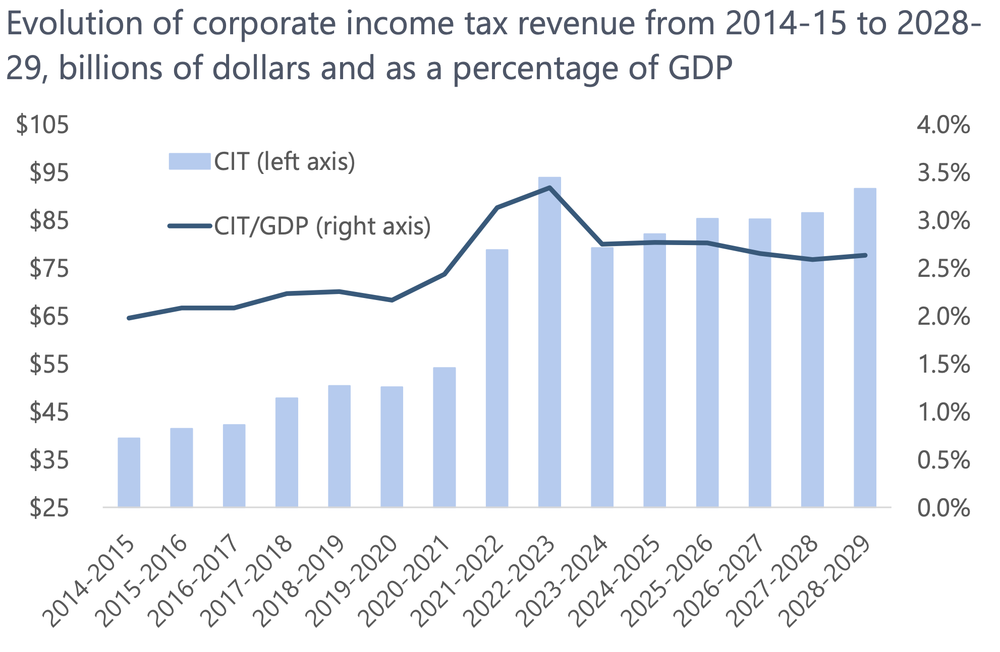
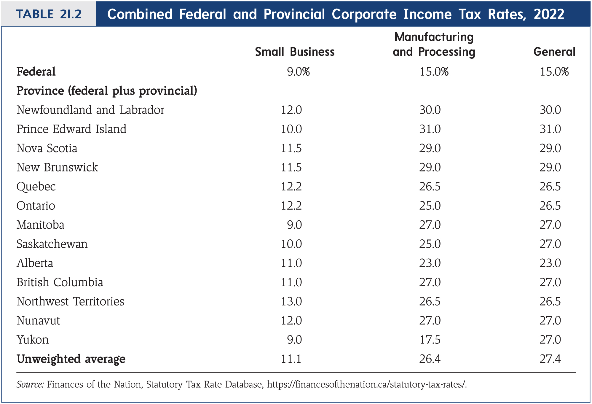

The Corporation Tax
EC313 - Public Economics: Taxation
Justin Smith
Wilfrid Laurier University
Fall 2025

Goals of This Section
Goals of This Section
Define and discuss externalities
Differentiate between negative and positive externalities
Discuss private responses to externalities
Discuss public responses to externalities, including Pigouvian taxes and subsidies
Introduction
Introduction
So far we have discussed individual taxation
Corporations also pay taxes, and are taxed separately
A corporation is a type of business organization that
- Is a legal entity that is separate from its owners
- Is owned by shareholders
- Can enter into contracts, own assets, and incur liabilities
The structure limits liability for shareholders
- Shareholders are not personally liable for the corporation’s debts or legal obligations beyond their investment in the company
Introduction
Introduction

Introduction

Introduction

Introduction

Introduction

Introduction
Corporations are important in terms of economic activity
Also in terms of the taxes they pay
Given they pay tax, there are efficiency and equity considerations
- We will explore these in this chapter
Corporate taxation is a complex and politically sensitive topic
- We will only cover the basics here
Why Tax Corporations?
Why Tax Corporations?
In Canada, we have a personal income tax
- The income of a corporation will eventually be distributed to individuals
- So itcould be taxed with the personal income tax
Why have a separate tax for corporations?
One reason is that corporations receive special privileges
- Limited liability, perpetual life, easy transfer of ownership
- These things are valuable, and so it is reasonable to tax corporations for them
Why Tax Corporations?
It also withholds taxes from foreign companies that operate in Canada
- Without a corporate tax, foreign companies could avoid paying Canadian taxes on their Canadian income
- The corporate tax ensures that foreign companies contribute to the cost of public goods and services in Canada
It allows the government to capture economic rents
- Some large corporations earn economic rents due to their market power or unique resources
- Taxing these rents are a way to raise revenue from them
It creates fairness with personal taxes
- Without a corporate tax, individuals could avoid paying personal income taxes by channeling their income through corporations
- The corporate tax helps to prevent this type of tax avoidance
How Corporate Taxes Work in Canada
Tax Rates
Corporate tax rates are less complex than personal income tax rates
There are three main rates:
- General corporate tax rate
- A lower small business tax rate on the first $500,000 of active business income
- A rate for manufacturing and processing income
Income is taxed at both the federal and provincial level
- Just like personal income
Tax Rates
Tax Rates

Tax Rates

Tax Rates

Tax Rates
These tax rates determine the statutory incidence of the corporate tax
We know that statutory incidence is not the same as economic incidence
Later we will explore who actually bears the burden of the corporate tax
- As before, it is complicated
- But generally speaking, the economic incidence falls on capital owners and workers
Wage Payments
Corporations pay wages to workers
This is a cost of doing business
Wage payments to labour are excluded from the corporate tax base
Depreciation
Business expenses are deductible from taxable income
But not all expenses are the same
Some get used up quickly (e.g., office supplies)
Others last a long time (e.g., machinery, buildings)
For tax purposes, they are treated differently
- For long-lasting assets, depreciation (the part consumed in the year) is used to allocate the cost over time
- The depreciation is deducted from taxable income each year
Depreciation
How does this work in practice?
Suppose a firm buys a machine for $1000 that lasts 10 years
If using the straight line method (deductions spread evenly), each year it can deduct $100 from its taxable income as depreciation
This reduces the firm’s taxable income and thus its tax liability
- If the corporate tax rate is 20%, the firm saves $20 in taxes each year due to the depreciation deduction
The present value of this stream of tax savings is
\[PV = \frac{20}{(1+r)} + \frac{20}{(1+r)^2} + ... + \frac{20}{(1+r)^{10}}\]
Depreciation
- The tax deductions effectively reduce the cost of the asset to the firm
\[\text{After-tax cost} = 1000 - PV\]
- More generally, the present value of the tax savings is
\[PV = \frac{D(1)\times t \times q}{(1+r)} + \frac{D(2)\times t \times q}{(1+r)^2} + ... + \frac{D(T)\times t \times q}{(1+r)^{T}}\]
where
- \(D(n)\) is the share of the initial asset cost that can be deducted in year \(n\)
- \(t\) is the corporate tax rate
- \(q\) is the initial cost of the asset
Depreciation
- If you factor out the initial cost \(q\), you get
\[PV = q \times \left(\frac{D(1) \times t}{(1+r)} + \frac{D(2)\times t}{(1+r)^2} + ... + \frac{D(T)\times t}{(1+r)^{T}}\right)\]
If we call the term in brackets \(\psi\), then the tax savings is \(q \times \psi\)
The after-tax cost of the asset is then
\[\text{After-tax cost} = (1-\psi)q\]
Depreciation
From that equation, the tax savings are higher if
The total depreciation schedule is shorter (smaller \(T\))
The total depreciation schedule is faster (\(D(n)\) bigger in earlier years)
This means that accelerated depreciation is more valuable for tax purposes
The most valuable is full expensing, where the entire cost can be deducted in the year of purchase
In Canada, certain investments are eligible for accelerated depreciation
Depreciation
An alternative to the straight line method is the declining balance method
- Declining balance is more common in Canada
Under declining balance, a fixed percentage of the remaining undepreciated value is deducted each year
For example, if the declining balance rate is 20%, in the first year the firm deducts 20% of the initial cost, in the second year it deducts 20% of the remaining value after the first year’s deduction, and so on
This results in larger deductions in the earlier years and smaller deductions in later years
Investment Tax Credits
In addition to depreciation deductions, firms may also be eligible for investment tax credits (ITCs)
Recall: deductions reduce taxable income, while credits reduce tax liability directly
ITCs are typically a percentage of the purchase price of investments
Reduce the tax liability in the year the investment is made
Example: a 10% ITC on a $1000 machine would reduce the firm’s tax liability by $100 in the year of purchase
Canada has used ITCs to enourage investment in certain sectors or regions
- Manufacturing and processing, clean energy
- Atlantic region
Interest
Corporations can deduct interest payments on debt from their taxable income
- Interest payments are a cost of doing business
Suppose the firm borrowed the money to buy the $1000 machine
- Imagine it keeps the loan for all 10 years, repaying at the end
- Interest rate is 10%
- Each year, the firm pays $100 in interest (10% of $1000)
The firm can deduct this $100 interest payment from its taxable income each year
This reduces the firm’s taxable income and thus its tax liability
- If the corporate tax rate is 20%, the firm saves $20 in taxes each year due to the interest deduction
Interest
- The present value of this stream of tax savings from interest deductions is
\[PV = \frac{20}{(1+r)} + \frac{20}{(1+r)^2} + ... + \frac{20}{(1+r)^{10}}\]
- In general, the present value of the tax savings from interest deductions is
\[PV = \frac{i \times q \times t}{(1+r)} + \frac{i \times q \times t}{(1+r)^2} + ... + \frac{i \times q \times t}{(1+r)^{T}}\]
Interest
- Factoring out the initial loan value \(q\), you get
\[PV = q \times \left(\frac{i \times t}{(1+r)} + \frac{i \times t}{(1+r)^2} + ... + \frac{i \times t}{(1+r)^{T}}\right)\]
If we call the term in brackets \(\lambda\), then the tax savings is \(q \times \lambda\)
The after-tax cost of the loan is then
\[\text{After-tax cost} = (1-\lambda)q\]
Dividends
Dividends are a main way to extract profits from a corporation
- They are payments made to shareholders from the corporation’s earnings
The value of dividends are taxed as personal income to the shareholders
They are not deductible from the corporation’s taxable income
Raises the question of double taxation
- Corporation pays tax on its earnings
- Shareholders pay tax on dividends received
Dividends
To mitigate double taxation, Canada has a dividend gross-up and tax credit system
When shareholders receive dividends, they must “gross up” the dividend amount by a certain percentage to reflect the pre-tax income of the corporation
They then pay personal income tax on this grossed-up amount
To offset this, shareholders receive a dividend tax credit that reduces their personal tax liability
In the end, the total tax paid on corporate earnings distributed as dividends is intended to be roughly equivalent to the tax that would have been paid if the income were earned directly by the shareholders
Dividend Tax Credit System
Imagine a corporation earns $125 in pre-tax profits
It pays a corporate tax of 20%, leaving $100 in after-tax profits
Distributing this $100 as a dividend to a shareholder
The shareholder grosses up the dividend by 25% (the gross-up rate for eligible dividends), resulting in a grossed-up amount of $125
The shareholder pays personal income tax on this $125
If the rate is 40%, the tax owed is $50
Dividend Tax Credit System
The shareholder then receives a dividend tax credit to offset some of this tax
If the tax credit is 20% of the grossed-up amount, the credit is $25
The shareholder’s net tax liability on the dividend is then
- Tax owed: $50
- Minus tax credit: $25
- Net tax liability: $25
Total tax paid on the original $125 of corporate profits is
- Corporate tax: $25
- Shareholder tax: $25
- Total tax: $50
Dividend Tax Credit System
Notice that this is the same as if the shareholder had earned the $125 directly and paid 40% personal income tax
- It instead comes partly from the corporation and partly from the shareholder
This system helps to integrate corporate and personal taxation, reducing the double taxation of dividends
Currently in Canada for regular businesses
- The federal gross-up rate for eligible dividends is 38%
- The federal dividend tax credit rate is 15.02% of the grossed-up amount
For small byusinesses, the rates are different
- The federal gross-up rate is 15%
- The federal dividend tax credit rate is 9.03% of the grossed-up amount
There are also provincial variations
References
References
Rosen, Harvey S., and Lindsay M. Tedds, and Trevor Tombe, and Jean-Francois Wen, and Tracy Snoddon. Public Finance in Canada. 6th Canadian edition. McGraw-Hill Ryerson, 2023.
Gruber, Jonathan. Public Finance and Public Policy. 7th edition. Worth Publishers, 2022.
Bazel, Philip. Marginal Effective Tax Rates for Working Families in Canada. Fraser Institute, 2024.
Hansen, Jeff, and Devan Mescall, and Graham Purse. “Policy Forum: The Effects of Indexation and Inflation on Tax System Design.” Canadian Tax Journal 71, no. 2 (2023): 398-404.